Priors, likelihoods, and posteriors, explained from scratch with a simple linear model
Every regression model you’ve ever fit with lm() gives you a single number for each coefficient, plus a standard error. Bayesian regression asks a different question: instead of one best-guess number, what’s the whole range of values the coefficient could plausibly take, given what you believed before seeing the data and what the data itself says?
This tutorial builds that idea from the ground up, using the simplest possible case — a straight line, \(y = \beta_0 + \beta_1 x\) — so the concepts are visible rather than buried in matrix notation. No prior Bayesian background assumed. Every plot and number below comes from real, executed R code.
1 The Bayesian Idea, in One Sentence
What’s fundamentally different about the Bayesian approach? In classical (frequentist) regression, the true coefficients \(\beta_0,\beta_1\) are fixed, unknown constants, and the data is treated as random. In Bayesian regression, we flip this around: the data we observed is now fixed (we already have it), and the coefficients are treated as random, because we’re uncertain about them. Bayesian inference describes that uncertainty as a probability distribution.
Three ingredients make this work:
Prior\(P(\beta)\) — what we believe about the coefficients before seeing the data.
Likelihood\(P(y\mid\beta)\) — how probable the observed data is, for any given value of the coefficients.
Posterior\(P(\beta\mid y)\) — what we believe about the coefficients after seeing the data, obtained by combining the other two via Bayes’ theorem:
The posterior is literally just the prior and the likelihood multiplied together (and rescaled so it integrates to 1). Everything in this tutorial is an illustration of that one line.
2 A Simple Linear Model to Work With
We’ll use the smallest interesting case: one predictor, one outcome, a straight line.
For this tutorial we’ll treat \(\sigma\) (the residual noise level) as known, which keeps the math simple enough to see clearly; in practice \(\sigma\) is usually estimated too, using a slightly more involved prior (Normal-Inverse-Gamma) that we’ll mention briefly at the end.
We simulate 12 data points from a known true line, so that at every step we can check our Bayesian estimates against ground truth.
set.seed(123)## True data-generating processtrue_beta0 <-2.0true_beta1 <-1.5sigma <-2.0# known residual SD, for this tutorial's conjugate-normal setupn <-12x <-runif(n, -3, 3)y <- true_beta0 + true_beta1 * x +rnorm(n, sd = sigma)## OLS for comparisonols <-lm(y ~ x)cat("OLS estimates:\n")print(coef(ols))cat("True values: beta0 =", true_beta0, " beta1 =", true_beta1, "\n")saveRDS(list(x = x, y = y, n = n, sigma = sigma,true_beta0 = true_beta0, true_beta1 = true_beta1),"bayes_data.rds")
With only 12 points, OLS (the red line) is already close to the true line (dashed black), but it gives us just one number per coefficient — no sense of how much uncertainty remains.
3 Choosing a Prior
Where does the prior actually come from? Anywhere you have real information: previous studies, domain knowledge, physical constraints (a variance can’t be negative), or — when you have none of that — a deliberately vague, “weakly informative” distribution that lets the data dominate. There’s no single correct prior; the prior is an explicit, checkable assumption, not a hidden one.
For this model we’ll place independent Normal priors on both coefficients:
This says: “before seeing any data, we think the intercept and slope are probably somewhere in the range \(\pm6\) or so, centered on zero (no assumed direction of effect).” It’s a moderately informative choice — not so tight that it overrides the data, not so vague that it does nothing.
4 Prior, Likelihood, and Posterior — Visualized Together
Because \(\beta_0\) and \(\beta_1\) are two numbers, we can draw the prior, the likelihood, and the posterior directly as contour maps over the \((\beta_0,\beta_1)\) plane, and literally watch Bayes’ theorem happen.
x <-readRDS("bayes_data.rds")$xy <-readRDS("bayes_data.rds")$ysigma <-readRDS("bayes_data.rds")$sigma## --- Prior: independent Normal beliefs about beta0 and beta1 ---prior_mean <-c(0, 0)prior_sd <-c(3, 3) # a moderately informative prior, centered at "no effect"## --- Grid over (beta0, beta1) space for visualization ---b0_seq <-seq(-4, 8, length.out =150)b1_seq <-seq(-3, 6, length.out =150)log_prior <-function(b0, b1) {dnorm(b0, prior_mean[1], prior_sd[1], log =TRUE) +dnorm(b1, prior_mean[2], prior_sd[2], log =TRUE)}log_likelihood <-function(b0, b1) { mu <- b0 + b1 * xsum(dnorm(y, mu, sigma, log =TRUE))}Prior <-outer(b0_seq, b1_seq, Vectorize(function(b0, b1) exp(log_prior(b0, b1))))LogLik <-outer(b0_seq, b1_seq, Vectorize(function(b0, b1) log_likelihood(b0, b1)))Lik <-exp(LogLik -max(LogLik)) # rescale for numerical stability, shape onlyLogPost <-outer(b0_seq, b1_seq, Vectorize(function(b0, b1) log_prior(b0, b1) +log_likelihood(b0, b1)))Post <-exp(LogPost -max(LogPost)) # unnormalized posterior surface (shape only, for plotting)contour(b0_seq, b1_seq, Prior, nlevels =8, col ="#2166AC",xlab =expression(beta[0]), ylab =expression(beta[1]), main ="Prior")contour(b0_seq, b1_seq, Lik, nlevels =8, col ="#B2182B",xlab =expression(beta[0]), ylab =expression(beta[1]), main ="Likelihood")contour(b0_seq, b1_seq, Post, nlevels =8, col ="#238B45",xlab =expression(beta[0]), ylab =expression(beta[1]), main ="Posterior")
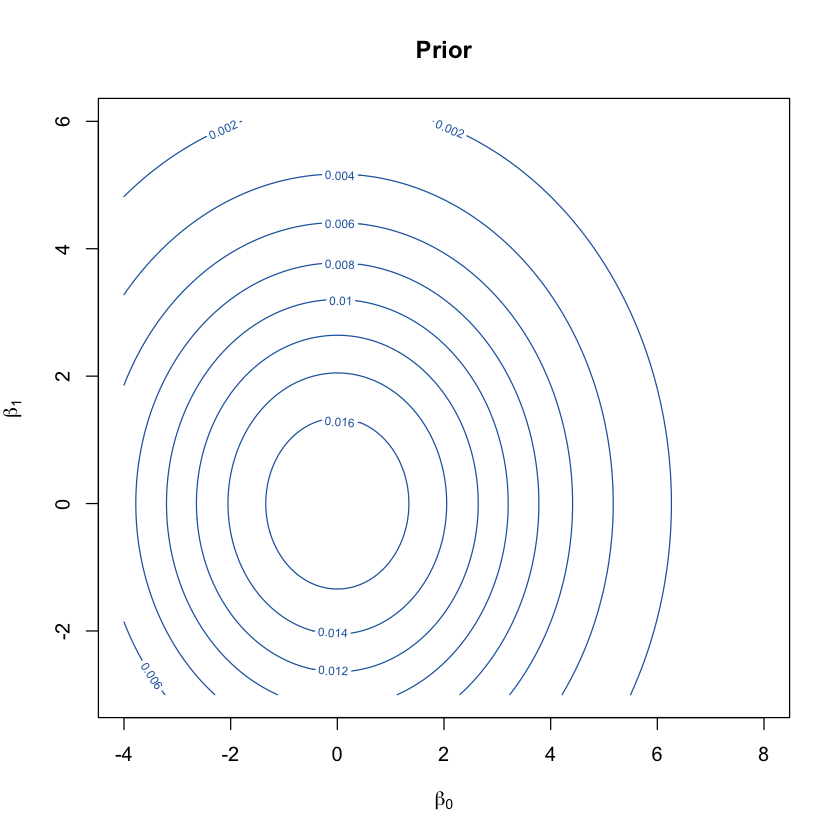
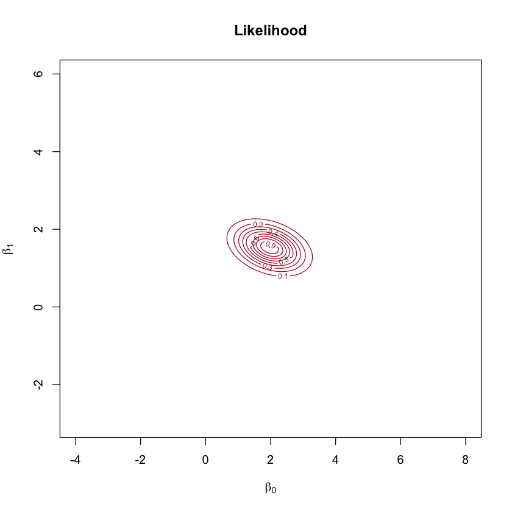
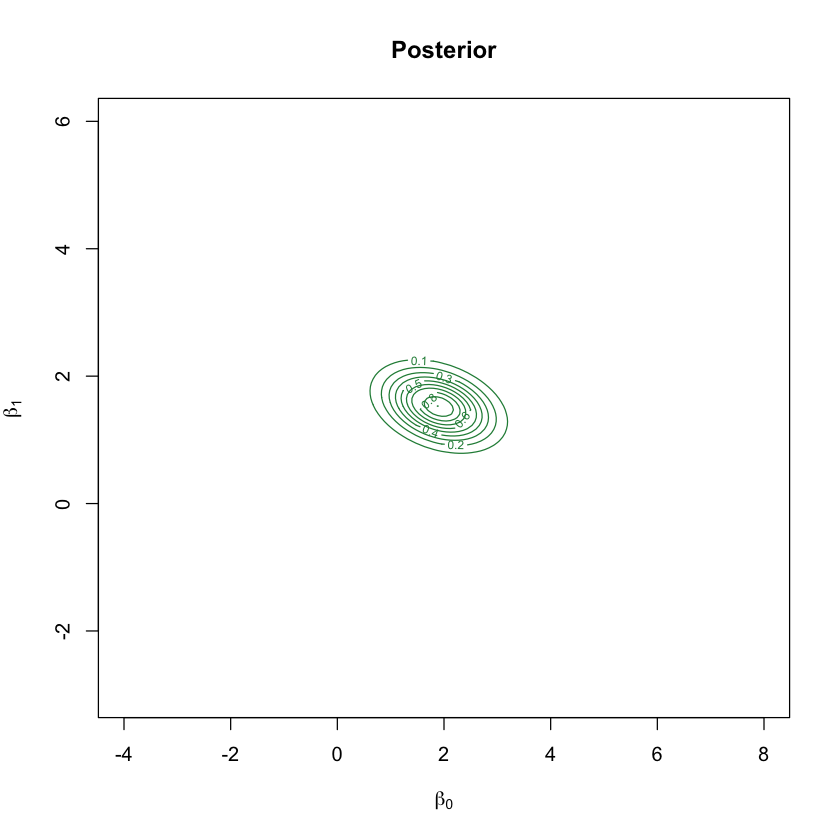
Read this left to right, exactly as Bayes’ theorem is written:
Prior (blue): centered at \((0,0)\), fairly wide — genuinely uncertain, but a bit skeptical of extreme values.
Likelihood (red): tells you which \((\beta_0,\beta_1)\) values make the observed data most probable, with no reference to prior beliefs at all. It’s elongated diagonally, because \(\beta_0\) and \(\beta_1\) trade off against each other — a steeper slope paired with a lower intercept can fit almost the same line.
Posterior (green): the two multiplied together. It sits between the prior’s center and the likelihood’s peak, and — because it’s the product of two informative surfaces — it’s noticeably tighter than either one alone.
5 The Closed-Form Solution
Do we have to numerically multiply grids like that every time? Not when the prior and likelihood are both Normal, which is exactly our setup. Two Normal distributions multiplied together are — remarkably — proportional to another Normal distribution. This means the posterior here has an exact formula, no grid or simulation required.
For the linear model \(y = X\beta + \varepsilon\) with \(\varepsilon\sim N(0,\sigma^2 I)\) and prior \(\beta \sim N(\mu_0, \Sigma_0)\):
This result goes back to Lindley & Smith (1972), and it’s worth staring at for a moment: \(\mu_{\text{post}}\) is literally a weighted average of the prior mean \(\mu_0\) and the OLS-like term \(X^\top y/\sigma^2\), weighted by how confident each one is (their precisions, i.e. inverse variances). More data or a more confident prior each pull the posterior toward themselves.
x <-readRDS("bayes_data.rds")$xy <-readRDS("bayes_data.rds")$ysigma <-readRDS("bayes_data.rds")$sigman <-readRDS("bayes_data.rds")$nX <-cbind(1, x)Sigma0 <-diag(prior_sd^2)mu0 <- prior_meanSigma_post <-solve(solve(Sigma0) +t(X) %*% X / sigma^2)mu_post <- Sigma_post %*% (solve(Sigma0, mu0) +t(X) %*% y / sigma^2)cat("Posterior mean:\n"); print(round(mu_post, 3))cat("Posterior covariance:\n"); print(round(Sigma_post, 4))cat("\nOLS estimate (for comparison):\n"); print(round(coef(lm(y ~ x)), 3))## Check: the closed-form posterior mean should match the peak of the## numerically gridded posterior surface computed earlierpeak_idx <-which(Post ==max(Post), arr.ind =TRUE)cat("\nGrid-based posterior peak (beta0, beta1):",round(b0_seq[peak_idx[1]], 3), round(b1_seq[peak_idx[2]], 3), "\n")
Posterior mean:
[,1]
1.902
x 1.524
Posterior covariance:
x
0.3600 -0.0671
x -0.0671 0.1167
OLS estimate (for comparison):
(Intercept) x
1.970 1.529
Grid-based posterior peak (beta0, beta1): 1.879 1.53
The formula-based answer (1.902, 1.524) matches the peak of the numerical grid (1.879, 1.53) to within grid resolution, and both land between the prior’s center \((0,0)\) and OLS \((1.970, 1.529)\) — exactly the “weighted average” behavior the formula promised.
6 When There’s No Closed Form: Sampling with MCMC
Most Bayesian models aren’t this convenient — the moment the prior and likelihood aren’t a matching Normal pair (which is most of the time in real applications), there’s no clean formula for the posterior. The standard fallback is Markov chain Monte Carlo (MCMC): instead of computing the posterior directly, we build a random walk that visits each region of parameter space in proportion to how probable it is under the posterior, and treat the resulting sequence of visited points as samples from the posterior itself.
The simplest version, the Metropolis-Hastings algorithm (Metropolis et al., 1953; Hastings, 1970), works like this:
Start somewhere, e.g. \(\beta = (0,0)\).
Propose a small random jump to a nearby point.
If the proposed point has higher posterior probability than the current one, always move there. If it has lower probability, move there anyway with a probability equal to the posterior ratio (so the chain still explores less-probable regions occasionally, rather than only ever climbing uphill).
Repeat thousands of times; after an initial “burn-in” period, the visited points are samples from the posterior.
We’ll validate this against our exact closed-form answer above — a good habit whenever a new method goes into a real pipeline.
Excellent agreement: MCMC’s mean and standard deviation both match the exact closed-form values to within simulation noise, without ever using the formula. The trace plots below show what the “random walk” actually looks like — a healthy chain wanders freely and doesn’t get stuck.
plot(chain[, 1], type ="l", col ="#2166AC", xlab ="Iteration", ylab =expression(beta[0]),main =expression(paste("Trace plot: ", beta[0])))abline(v = burn_in, col ="grey40", lty =2)plot(chain[, 2], type ="l", col ="#B2182B", xlab ="Iteration", ylab =expression(beta[1]),main =expression(paste("Trace plot: ", beta[1])))abline(v = burn_in, col ="grey40", lty =2)
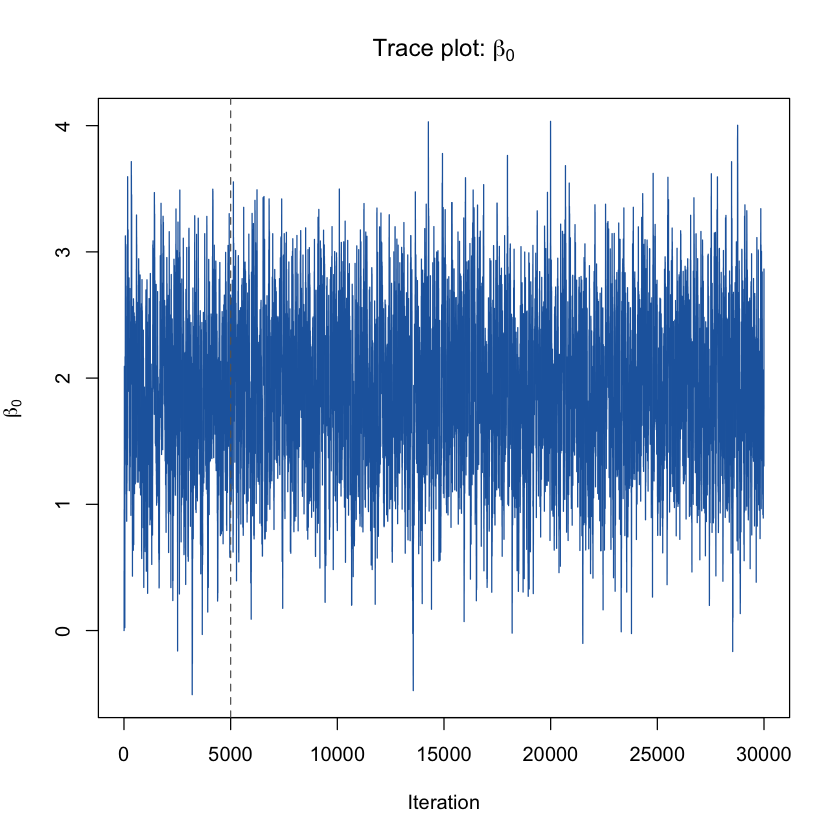
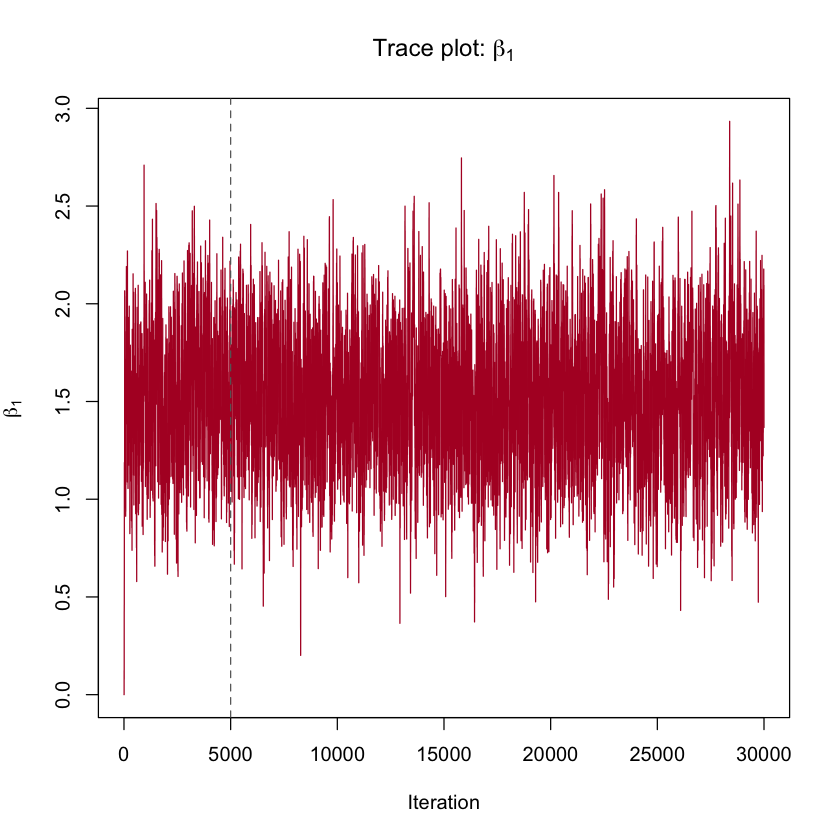
The chain jumps around a stable band immediately (this particular problem is easy — real models often need a longer burn-in), and the dashed line marks where we discarded the initial samples before the chain had settled. Overlaying the raw MCMC samples on the exact posterior contours makes the agreement visual rather than just numerical.
plot(post_burn[, 1], post_burn[, 2], pch =16, cex =0.3, col =rgb(0.13, 0.4, 0.67, 0.15),xlab =expression(beta[0]), ylab =expression(beta[1]),main ="MCMC samples vs. closed-form posterior contours")contour(b0_seq, b1_seq, Post, nlevels =8, col ="#238B45", lwd =2, add =TRUE)
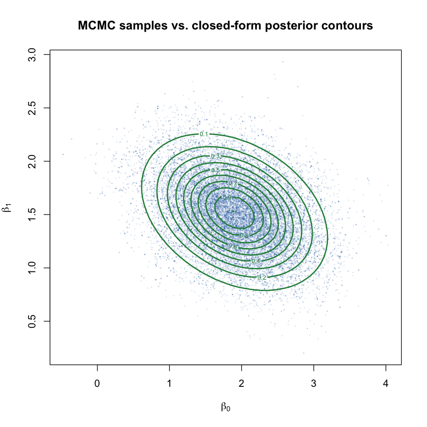
The cloud of blue dots (MCMC samples) sits squarely inside the green contours (the exact posterior) — two completely different computational strategies landing on the same answer.
7 What Happens as You Collect More Data
Does the prior matter forever, or does it fade? It fades, and it fades at a predictable rate: the influence of the prior is proportional to \(1/n\) relative to the data, so as \(n\) grows, the likelihood eventually dominates regardless of what prior you started with (as long as the prior didn’t rule out the true value entirely).
We can watch this directly by refitting the same conjugate model at increasing sample sizes, keeping the same prior throughout.
Posterior means as n grows:
n = 3 : 2.756 0.038
n = 10 : 2.045 1.621
n = 50 : 2.175 1.519
n = 500 : 1.93 1.472
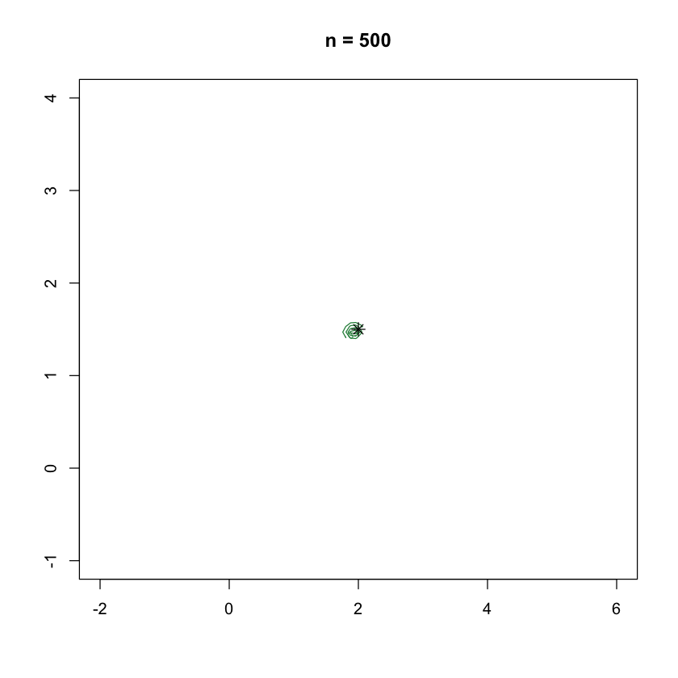
With only 3 data points, the posterior is wide and its center (\(\beta_1\approx0.04\)) is nowhere near the truth (1.5) — there simply isn’t enough information yet to overcome the prior’s pull toward zero. By \(n=500\), the contour has shrunk to a tight cluster right on top of the true value (\(\star\)), and the specific prior we chose has essentially no influence left.
8 What Happens With a Stronger or Weaker Prior
The flip side: at a fixed sample size, how much the prior matters depends entirely on how confident (narrow) it is.
OLS estimate: 1.97 1.529
Very informative (sd=0.5) : posterior mean = 0.925 1.214
Moderate (sd=3) : posterior mean = 1.902 1.524
Vague (sd=50) : posterior mean = 1.969 1.529
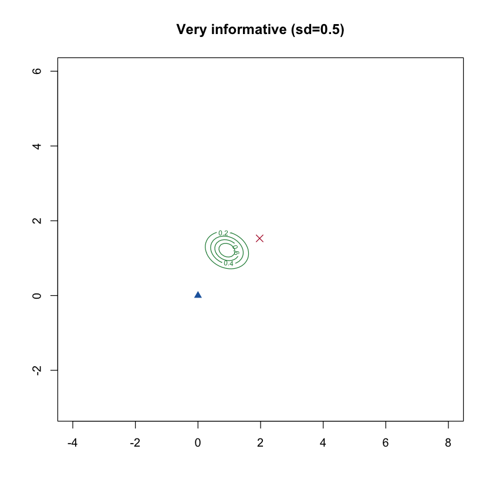
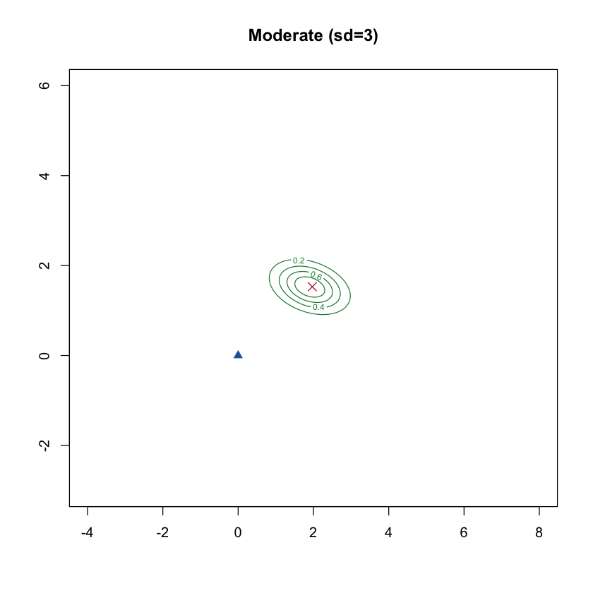
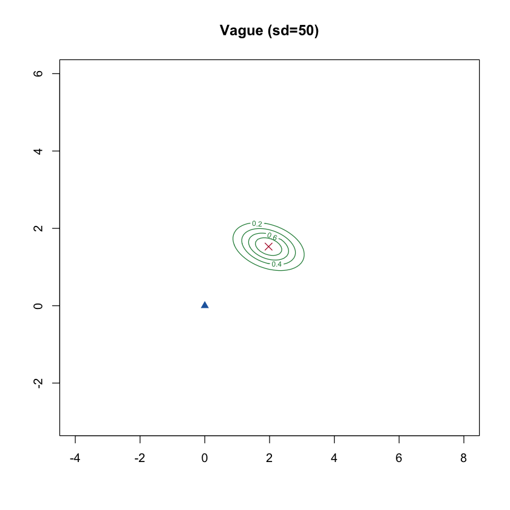
With a very informative prior (left), the posterior mean (0.925, 1.214) is pulled substantially away from OLS (1.97, 1.529, red X) toward the prior’s center at the origin (blue triangle) — the prior is actively fighting the data. With a vague prior (right), the posterior mean (1.969, 1.529) is essentially identical to OLS — a sufficiently uninformative prior lets the data speak almost entirely for itself. This is the concrete meaning of “how strong is your prior”: how much it’s willing to override what the data alone would say.
9 Summarizing Uncertainty: Credible Intervals
How is a Bayesian credible interval different from a frequentist confidence interval? A 95% credible interval is a direct statement about the parameter: given this prior and this data, there’s a 95% probability the true coefficient lies in this range. A 95% confidence interval makes a different, more roundabout claim: if we repeated this exact sampling procedure many times, 95% of the intervals we’d construct would contain the true value — it says nothing about the probability for this specific interval. In practice, with a weak prior, the two intervals are often numerically close, but the interpretations are genuinely different.
Because our posterior is exactly Normal, the marginal credible intervals have a closed form too.
sd_post <-sqrt(diag(Sigma_post))mu_post_v <-as.vector(mu_post)## 95% equal-tailed credible intervals (exact, since marginals are Normal)cred_b0 <- mu_post_v[1] +c(-1, 1) *qnorm(0.975) * sd_post[1]cred_b1 <- mu_post_v[2] +c(-1, 1) *qnorm(0.975) * sd_post[2]## Frequentist 95% confidence intervals from OLSfreq_ci <-confint(lm(y ~ x))cat("Bayesian 95% credible interval for beta0:", round(cred_b0, 3), "\n")cat("Frequentist 95% CI for beta0 :", round(freq_ci[1, ], 3), "\n\n")cat("Bayesian 95% credible interval for beta1:", round(cred_b1, 3), "\n")cat("Frequentist 95% CI for beta1 :", round(freq_ci[2, ], 3), "\n")b0_range <-seq(mu_post_v[1] -4* sd_post[1], mu_post_v[1] +4* sd_post[1], length.out =300)dens0 <-dnorm(b0_range, mu_post_v[1], sd_post[1])plot(b0_range, dens0, type ="l", lwd =2, col ="#238B45",xlab =expression(beta[0]), ylab ="Posterior density", main =expression(paste("Marginal posterior: ", beta[0])))b1_range <-seq(mu_post_v[2] -4* sd_post[2], mu_post_v[2] +4* sd_post[2], length.out =300)dens1 <-dnorm(b1_range, mu_post_v[2], sd_post[2])plot(b1_range, dens1, type ="l", lwd =2, col ="#238B45",xlab =expression(beta[1]), ylab ="Posterior density", main =expression(paste("Marginal posterior: ", beta[1])))
Bayesian 95% credible interval for beta0: 0.726 3.078
Frequentist 95% CI for beta0 : 0.481 3.459
Bayesian 95% credible interval for beta1: 0.854 2.193
Frequentist 95% CI for beta1 : 0.691 2.366
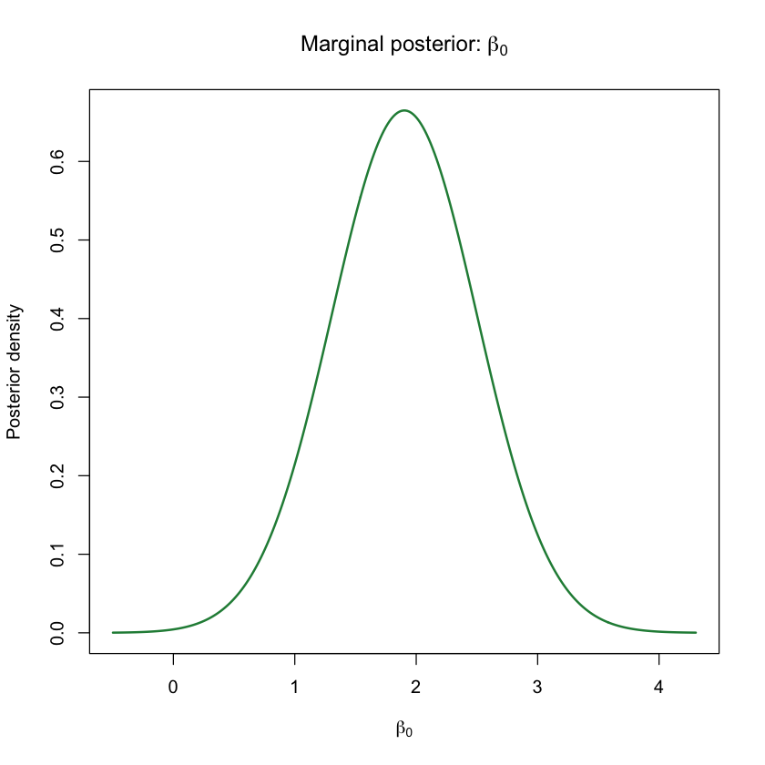
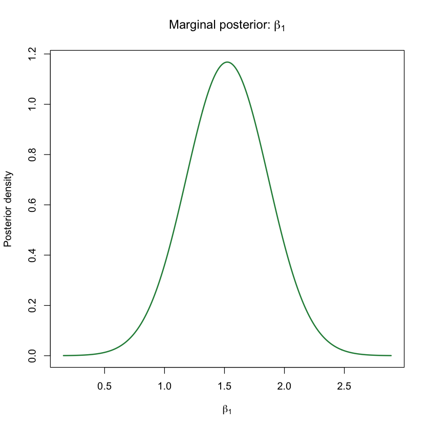
Here the credible intervals are somewhat narrower than the frequentist ones, because our moderately informative prior is contributing genuine (if modest) extra information beyond what these 12 data points alone provide. The shaded region marks the credible interval; the dashed line marks the true value, which both intervals correctly capture in this example.
10 The Posterior Predictive Distribution
The posterior over \((\beta_0,\beta_1)\) answers “what do we believe about the coefficients.” A different, often more directly useful question is: “what do we believe about a new\(y\) value at a given \(x\)?” This is the posterior predictive distribution, and it has to account for two separate sources of uncertainty:
\[
\text{Var}(y_{\text{new}} \mid x_{\text{new}}, y) = \underbrace{x_{\text{new}}^\top \Sigma_{\text{post}}\, x_{\text{new}}}_{\text{uncertainty about the line itself}} + \underbrace{\sigma^2}_{\text{irreducible observation noise}}
\]
Even if we knew \(\beta_0,\beta_1\) perfectly, individual points would still scatter around the line by \(\sigma\); the posterior predictive interval has to be at least that wide everywhere, and gets wider still near the edges of the data, where we’re less sure exactly where the line sits.
The band is narrowest near the middle of the observed \(x\) values (where the data constrains the line best) and flares out toward the edges — exactly the intuition that predictions get less certain the further you extrapolate. Even at the very center, though, the band never collapses to a thin line, because \(\sigma\) (the irreducible noise) sets a floor on how tight any prediction interval can be.
11 Summary
Bayesian regression treats coefficients as uncertain quantities with a probability distribution, rather than fixed numbers with a single best estimate.
The posterior is just the prior and the likelihood multiplied together: \(P(\beta\mid y) \propto P(y\mid\beta)\,P(\beta)\).
When the prior and likelihood are both Normal, the posterior is Normal too, with an exact closed-form mean and covariance — a weighted average between what the prior believed and what the data alone would say.
When there’s no closed form (the usual case in practice), Markov chain Monte Carlo methods like Metropolis-Hastings let you sample from the posterior instead of computing it directly, and — as shown here — they agree with the exact answer when one is available.
More data shrinks the posterior and reduces the prior’s influence; a more informative (narrower) prior increases that influence at any fixed amount of data.
Credible intervals and confidence intervals often look numerically similar, but answer genuinely different questions.
The posterior predictive distribution folds in an extra source of uncertainty — the residual noise \(\sigma^2\) — on top of the parameter uncertainty in the posterior itself.
This same machinery — priors over effect sizes, exact or sampled posteriors, and shrinkage toward the prior — is the foundation behind Bayesian polygenic score methods like SBayesR, just scaled up to millions of genetic variants instead of two coefficients.
12 References
Lindley, D. V. & Smith, A. F. M. (1972). Bayes estimates for the linear model. Journal of the Royal Statistical Society: Series B, 34, 1–41.
Metropolis, N., Rosenbluth, A. W., Rosenbluth, M. N., Teller, A. H. & Teller, E. (1953). Equation of state calculations by fast computing machines. Journal of Chemical Physics, 21, 1087–1092.
Hastings, W. K. (1970). Monte Carlo sampling methods using Markov chains and their applications. Biometrika, 57, 97–109.
Gelman, A., Carlin, J. B., Stern, H. S., Dunson, D. B., Vehtari, A. & Rubin, D. B. (2013). Bayesian Data Analysis (3rd ed.). CRC Press.
Kruschke, J. K. (2015). Doing Bayesian Data Analysis (2nd ed.). Academic Press.